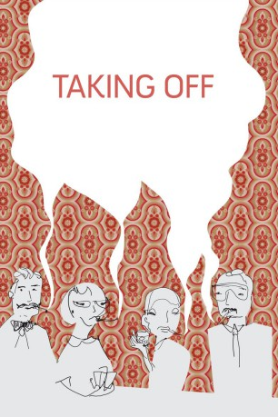

#5650 Taking Off
 
 IMDB-Wertung: 7.4 / 10
IMDB-Wertung: 7.4 / 10  Tomatometer: 100
Tomatometer: 100  Metascore: 0
Metascore: 0 
Als Jeannie nach New York ausbüxt, sind die Eltern in Panik. Zwar ist das Mädchen bald wohlbehalten wieder da, doch der Alltag ist für ihre Eltern und deren Freunde nicht mehr derselbe. Die Erwachsenen überschlagen sich ab sofort im Bemühen, die junge Generation zu begreifen. So kommt der Zuschauer unter anderem in den Genuß verkrampfter Strip-Pokerrunden und albern bekiffter Mittvierziger, freut sich über einen Gastauftritt von Ike und Tina Turner und erlebt die Geburtsstunde eines erbarmungslosen Jugendlichkeits-Kultes.
Jahr: 1971
Dauer: 92 Minuten
FSK:
Land: USA Studio: Carlotta FilmsTonspuren:
Untertitel: Englisch,
Auflösung: 720p (1280x688) Größe: 7157 MB
Genre: Drama, Musik, Komödie
Regisseur:  Milos Forman
Milos Forman
Drehbuch: Ernst Marischka
Soundtrack:
Darsteller:
 Buck Henry als Larry Tyne
Buck Henry als Larry Tyne Georgia Engel als Margot
Georgia Engel als Margot- Audra Lindley als Ann Lockston
 Paul Benedict als Ben Lockston
Paul Benedict als Ben Lockston Vincent Schiavelli als Schiavelli
Vincent Schiavelli als Schiavelli- Tina Turner als Herself
 Rae Allen als Mrs. Divito
Rae Allen als Mrs. Divito Philip Bruns als Policeman
Philip Bruns als Policeman Allen Garfield als Norman
Allen Garfield als Norman- Ultra Violet als SPFC Member
 Kathy Bates als Audition Singer
Kathy Bates als Audition Singer- Carly Simon als Audition Singer
- Catherine Heriza als Audition Singer
- Susan Edwards als Singer , uncredited
 Jessica Harper als Herself , uncredited
Jessica Harper als Herself , uncredited- Lynn Carlin als Lynn Tyne
- Tony Harvey als Tony
- David Gittler als Jamie
- Ike Turner als Himself
- Linnea Heacock als Jeannie Tyne
- Frank Berle als Committee Man
- Gail Busman als Nancy Lockston
- Corinna Cristobal als Corinna Divito
- Barry Del Rae als Schuyler
- Robert Dryden als Dr. Bronson
- Madeline Geffen als Committee Woman
- Anna Gyory als Ellen Lubar
- Jack Hausman als Dr. Bob Besch
- Carrie Kotkin als Laurie
- Herman Meckler als SPFC President
- Sari Freeman als Audition Singer
- Jamie Freeman als Audition Singer
- Nina Hart als Audition Singer
- Michelle Scheideler als Audition Singer
- Debbie Robbins als Audition Singer
- Nancy Bell als Audition Singer
- Nancy Ferland als Audition Singer
- Jane Bedrick als Audition Singer
- Susan Chafitz als Audition Singer
- Meryl Schneiderman als Audition Singer
- Janie Rosenberg als Audition Singer
- Kay Beckett als Audition Singer
- Mary Mitchell als Audition Singer
- Shellen Lubin als Audition Singer
- Jinx Rubin als Audition Singer
- Caren Klugman als Audition Singer
- Lois Dengrove als Audition Singer , uncredited
- Lillian Halpert als SPFC Member , uncredited
Datei: X:\1971\Taking Off (1971, FSK, 1280x688).mkv seit 02.03.2017
Festplatte: HD 1971-1979
 Es gibt insgesamt 28 Filme in der Gruppe '1971'
Es gibt insgesamt 28 Filme in der Gruppe '1971'